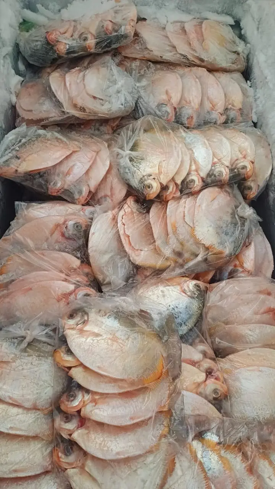
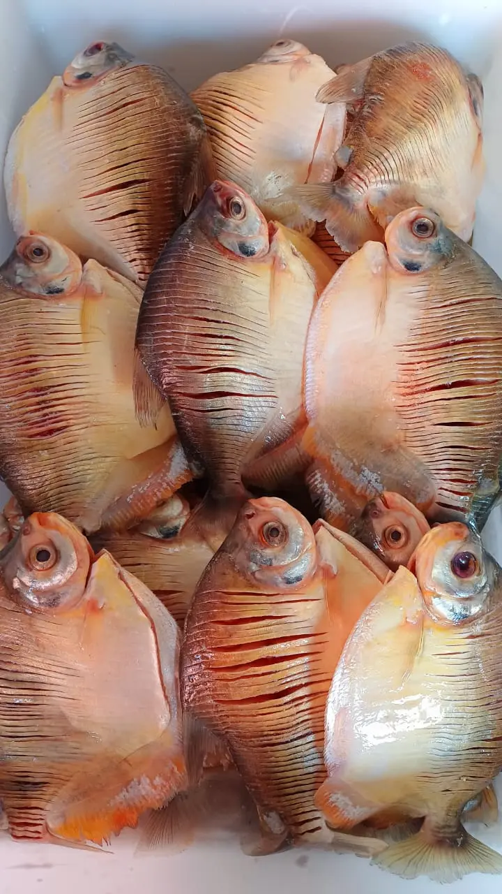
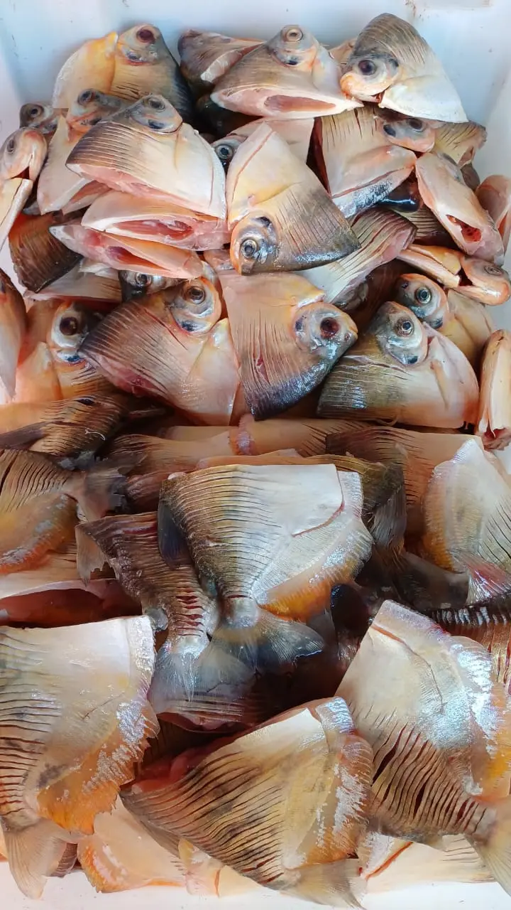
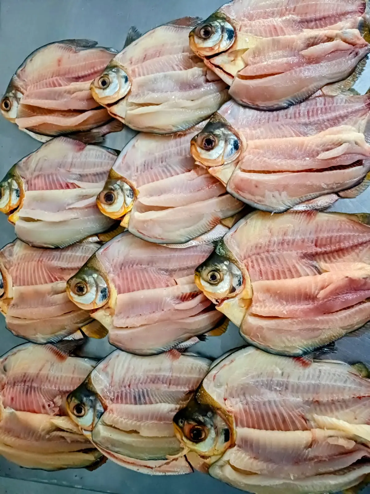

Pacupeva Fresco
Mylossoma duriventre
Escolha o Corte:
Retire na loja: R. Bom Jardim, 379 — Centro, Cáceres.
Pacupeva: O Pequeno Grande Sabor das Águas do Rio Paraguai
O Pacupeva (Mylossoma duriventre) é parente próximo do Pacu, mas se distingue pelo porte menor e pelo corpo lateralmente comprimido, quase circular — daí o sufixo "peva", que em tupi significa achatado. Comum nas águas claras e barrentas do Rio Paraguai e na planície pantaneira, o Pacupeva é um peixe onívoro que se alimenta de frutos, algas e invertebrados aquáticos. Apesar do tamanho mais modesto, sua carne é excepcionalmente gordurosa e aromática, considerada por muitos pescadores pantaneiros até mais saborosa que a do Pacu em determinados preparos — especialmente quando assado inteiro na brasa ou frito com a pele crocante.
Características e Sazonalidade do Pacupeva
O Pacupeva adulto pesa entre 500 gramas e 1,5 quilo e mede de 20 a 35 centímetros. Suas escamas são grandes, brilhantes e de difícil remoção, mas a pele crocante resultante é justamente um dos pontos altos do preparo frito ou assado. A temporada de maior disponibilidade ocorre entre os meses de março e outubro, período em que os cardumes se concentram em remansos e lagoas marginais do Rio Paraguai. A gordura subcutânea característica — especialmente visível na região do dorso e da barriga — é o que diferencia o Pacupeva fresco de qualidade: quanto mais brilhante e firme, mais frescoo peixe.
Melhores Formas de Preparar o Pacupeva
Inteiro na brasa, temperado apenas com sal grosso e limão, é o método que melhor revela o sabor natural do Pacupeva. A gordura natural derrete lentamente sobre as brasas, mantendo a carne úmida e criando uma pele levemente crocante por fora e suculenta por dentro. Em postas, o Pacupeva brilha no ensopado pantaneiro: refogue alho, cebola e tomate maduro em azeite, adicione as postas e cubra com água quente — em 15 minutos o caldo encorpado está pronto para ser servido com arroz e farofa de banana. O Pacupeva frito inteiro, na frigideira funda com bastante óleo quente, é um clássico irresistível do cotidiano ribeirinho de Cáceres: dourado por fora, suculento por dentro.
Pacupeva Fresco na Peixaria Rio Paraguai
Na Peixaria Rio Paraguai, o Pacupeva chega fresco direto das águas do Rio Paraguai e é preparado sob encomenda — escamado, eviscerado e cortado no corte escolhido pelo cliente. Respeitamos rigorosamente o período de defeso e as normas ambientais estaduais, garantindo a sustentabilidade do estoque pesqueiro para as gerações futuras. Por ser um produto de disponibilidade variável conforme a época do ano, recomendamos consultar a disponibilidade diretamente pelo WhatsApp antes de fazer o pedido.